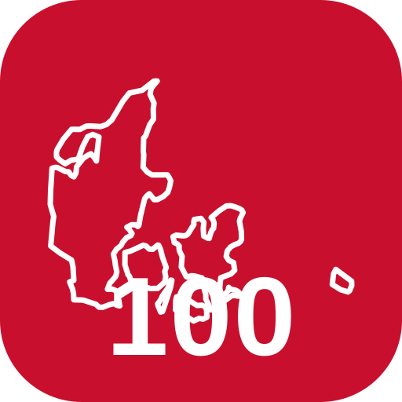

Danmark · 100 Seværdigheder
Log ind for at samle dine besøgte seværdigheder, planlægge ruter og dele med familien. Gratis — ingen betaling.
Ny her? Opret bruger
Vælg selv et kodeord (mindst 6 tegn). Det er gratis at oprette en bruger — ingen betaling.